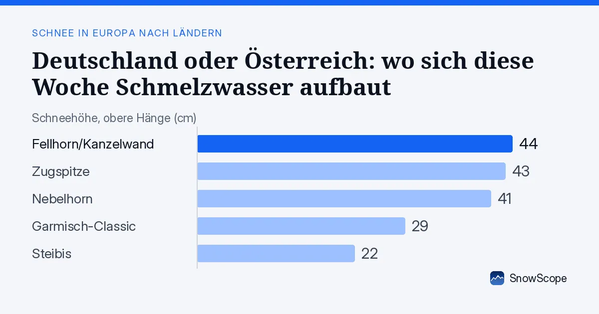
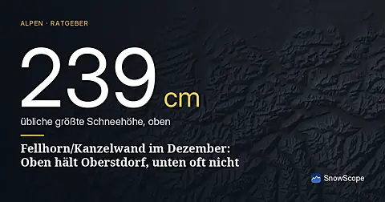

Deutschland oder Österreich: wo sich diese Woche Schmelzwasser aufbaut
Frühjahrsschnee fällt über die Alpen, aber Österreichs Berge speichern im Moment mehr Wasser. Deutschland hat am 20. November nur 4 Prozent Schneebedeckung, Österreich sitzt bei 44 Prozent – eine Lücke, die für die Winterwasserversorgung zählt.
Die Live-Schneeprognose für Fellhorn/Kanzelwand in der SnowScope-AppSchneehöhen, Pulverschnee-Alarme und 3D-Karte, gratis.
Österreich vorn: mehr Schneebedeckung, mehr Wasser
Österreich hält am selben Datum deutlich mehr Schnee. Bei 44 Prozent Schneebedeckung im gemessenen Gebiet hat Österreich eine Wasserreserve aufgebaut, die Deutschland noch nicht erreicht hat. Das Topresort Österreichs, Rifflsee, liegt bei 120 cm Tiefe – mehr als doppelt so tief wie Fellhorn/Kanzelwand in Deutschland (44 cm). Dieser Unterschied spiegelt sowohl höhere Berge in Österreich als auch frühere Schneeakkumulation im November wider.
Für einen Schneehydrologen zählt nicht nur die bedeckte Fläche, sondern das Volumen des in dem Schnee gespeicherten Wassers. Österreichs größere Bedeckung bedeutet, dass im Frühling mehr Schmelzwasser in Flüsse und Stauseen fließen wird, wenn die Temperaturen steigen. Deutschlands 4 Prozent Bedeckung bedeutet, dass ein großer Teil des flacheren Landes trocken bleibt.
| Land | Weiß | Schneereichstes Skigebiet | Nächste 7 Tage |
|---|---|---|---|
| Deutschland | 4 % | Fellhorn/Kanzelwand | 33 cm |
| Österreich | 44 % | Rifflsee | 44 cm |
| Schweiz | 64 % | Glacier 3000 | 89 cm |

Deutschlands Hochgebirge holen schnell auf
Obwohl Österreich insgesamt führt, füllen sich Deutschlands Hochgipfel schnell. Die Allgäuer Alpen erhielten in den letzten 72 Stunden 34 cm Neuschnee – das feuchteste Gebiet des Landes. In Höhen über 2.000 m zeigt Deutschland 18 cm mittlere Tiefe und fast vollständige Schneebedeckung. Die Schneegrenze liegt bei 1.300 m, daher ist nur das obere Drittel des deutschen Skiterrains heute weiß.
Fellhorn/Kanzelwand in den Allgäuer Alpen (Gipfel 1.965 m) führt jetzt alle deutschen Skigebiete mit 44 cm Tiefe und 35 cm Neuschnee in drei Tagen an. Dieses Wasserreservoir aus Hochaltschnee wird die Flachlandflüsse mit fortschreitender Saison speisen, aber es baut sich von einer dünnen Basis auf.

Wo der Schnee in Deutschland am tiefsten ist
Die beste Schneewaterspeicherung in Deutschland liegt über 2.000 m. Nur 58 von 230 Skigebieten haben am 20. November messbaren Schnee, und die meisten davon sind hoch gelegen. Die Zugspitze (2.627 m) hat 43 cm und erhielt in drei Tagen 16 cm. Das Nebelhorn (2.213 m) hält 41 cm und gewann 29 cm. Beide liegen deutlich über der Schneegrenze und werden den ganzen Winter über in Flusseinzugsgebiete entwässern.
Zwischen 1.500 und 2.000 m erreicht die mittlere Tiefe 9 cm und die Bedeckung ist fast vollständig. Unter 1.500 m ist der Schnee fleckig oder fehlt. Dieses vertikale Band ist die Übergangzone: bei ein paar warmen Tagen könnte dieser flache Schnee verschwinden und kein Wasser für die Novemberaufladung hinterlassen.
Die nächsten drei Tage: Deutschland bekommt stärkere Fälle
Schnee wird in den nächsten Tagen in beiden Ländern fallen, aber Deutschland wird größere Mengen sehen. Österreich erhält in den nächsten sieben Tagen bis zu 44 cm, verteilt über einen längeren Zeitraum.
Für Wasserwirtschaftler zählt dies: konzentrierter schwerer Schnee in Höhenlagen kann zu schnellem Abfluss führen, wenn Warmregen folgt. Allmähliche Fälle sind leichter in Bergstauseen aufzunehmen. Deutschlands Hauptereignis ist der 22. November; Österreichs Niederschlag wird stetiger ausfallen.
Was die Höhenbänder zeigen: Deutschlands dünner Herbstschnee
Deutschlands Schnee ist eng nach Höhe gestapelt. Von 500–1.000 m: nichts. Von 1.000–1.500 m: nur 1 cm mittlere Tiefe und 37 Prozent Bedeckung. Von 1.500–2.000 m: 9 cm und 99 Prozent Bedeckung. Von 2.000–2.500 m: 18 cm und vollständige Bedeckung. Dieser steile Gradient ist typisch für die Frühsaison, wenn nur die höchsten Gipfel gefroren bleiben. Österreichs 44-Prozent-Durchschnitt deutet auf tieferen Schnee über einen breiteren Höhenbereich hin.
Für Schmelzzeitpunkt: Österreich wird wahrscheinlich Schmelzwasser früher im Frühling freigeben, weil Schnee in niedrigeren Höhen liegt, wo Temperaturen zuerst ansteigen. Deutschlands Wasser ist höher eingelagert und kommt später.
Ausblick: zweite Woche bleibt trocken
Nach dem 23. November hört der Schneefall in beiden Ländern auf. Die zweite Woche des späten November (28. November–4. Dezember) bringt in Deutschland maximal 12 cm, dünn über Tage verteilt. Diese Pause zählt: Frühjahrsschnee, der auf bloßem Boden oder dünner Basis fällt, kann verdichten, seinen Wassergehalt reduzieren oder verschwinden. Österreichs Vorteil in der Bedeckung jetzt gibt ihm einen Vorsprung, falls der Dezember kalt bleibt.
Beobachte die Daten, wenn der 22. November näher rückt. Schwerer, nasser Schnee auf dünner Basis kann abgehen; check das offizielle Lawinenbulletin, wenn du abseits der Pisten unterwegs bist. SnowScope verfolgt diese Veränderungen täglich: Besuche snowscope.app, um die Waterspeicherung über die Alpen zu verfolgen, während die Saison aufbaut.
Tipps für Skifahrer
- Fahre über 1.500 m in Deutschland: die Schneegrenze liegt bei 1.300 m, daher sind Abhänge unter dieser Höhe blanker Boden gemischt mit Schneeflecken. Obere Abfahrten bei Fellhorn, Nebelhorn und Zugspitze haben am 20. November stabilen Schnee.
- Österreichs tieferer Schnee ist jetzt sicherer zum Fahren, aber nach dem Neuschnee am 22. November, achte auf Instabilität an steilen Hängen in beiden Ländern. Konsultiere das offizielle Lawinenbulletin, bevor du abseits der Pisten fährst.
- Wasserwirtschaft: Deutschlands Vorhersage von 14 cm für den 22. November auf kleinem Hochaltgebiet bedeutet begrenzter Abfluss. Österreich wird mehr Wasser insgesamt speichern, weil es eine breitere Bedeckung hat.
- In einer Woche kann sich das Bild ändern: Wenn Temperaturen fallen und Schnee an Bodenhöhe haftet, wird Deutschlands Weiß erweitert. Check die Vorhersage nach dem 23. November.
- Frühjahrsschnee ist dünn und kann Steine verbergen. Fahre langsam und mache dich mit dem Gelände unter Neubedeckung vertraut.
Zu diesen Zahlen
Die Schneehöhen der Skigebiete sind der meiste Schnee in den oberen Hängen am angegebenen Tag; es sind Schätzungen für eine Fläche, keine Messung an einem Punkt. Prognosen können sich ändern. Lies vor dem Freeriden immer den offiziellen Lawinenlagebericht.
Diesen Bericht zitieren
Für Forschung, Lehre oder Presse: Zahlen und Grafiken sind unter CC BY 4.0 mit dieser Quellenangabe frei nutzbar.
SnowScope (2026), Deutschland oder Österreich: wo sich diese Woche Schmelzwasser aufbaut, https://snowscope.app/blog/de/2026/11/germany-snow-vs-neighbours-20-november-2026.html, abgerufen am 2026-11-20
SnowScope (Atlas Labs). (2026, November 20). Deutschland oder Österreich: wo sich diese Woche Schmelzwasser aufbaut. SnowScope snow reports. https://snowscope.app/blog/de/2026/11/germany-snow-vs-neighbours-20-november-2026.html
BibTeX
@misc{snowscope2026germanysnowvsneighbours2,
author = {{SnowScope (Atlas Labs)}},
title = {Deutschland oder Österreich: wo sich diese Woche Schmelzwasser aufbaut},
year = {2026},
month = nov,
howpublished = {\url{https://snowscope.app/blog/de/2026/11/germany-snow-vs-neighbours-20-november-2026.html}},
note = {Published 2026-11-21 13:33 UTC; accessed 2026-11-20}
}· CC BY 4.0 · Methoden, Daten und Werkzeuge →
Fellhorn/Kanzelwand: Schnee und Temperatur nach Höhe, dieser Winter vs letzter (Werkzeuge) →
Fellhorn/Kanzelwand folgen
Gratis: eine Nachricht, wenn Neuschnee kommt, und jeden Morgen die Vorhersage.
Weitere Schneeberichte

Zugspitze-Gletscher hat am 15. Dezember typischerweise 122 cm Schnee auf 2.627 m; Garmisch-Classic-Spitze 57 cm. Gleicher Preis, unterschiedliche Schneedecke. Daten aus 46 Wintern.

Am 15. Dezember auf Fellhorn/Kanzelwand: 63 cm auf 1965 m Gipfel, 30 cm am Berg, nur 10 cm auf 918 m Tal. Plane entsprechend.